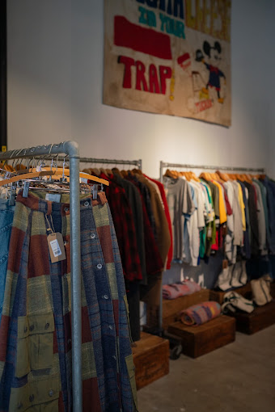
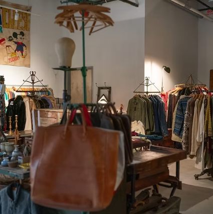

Found Store



FOUND in Cambridge offers a thoughtfully curated selection of vintage and secondhand clothing catering to various styles and preferences.
FOUND Black Label emphasizes high-quality vintage and designer pieces.
FOUND Casual Everyday Wear features versatile staples for daily outfits, and FOUND Streetwear provides trendy, urban-inspired looks.
Customers can find unique garments such as retro denim, graphic tees, stylish outerwear, and accessories that reflect decades of fashion.
- Sells Desginer items!
- Curates the most out of the previous stores named
- They buy, sell, trade!
- Always packed
- They WILL lowball you
- Is it bit far from the nearest train station